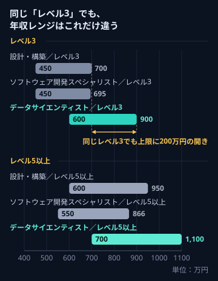
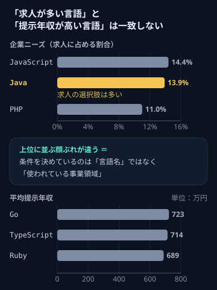
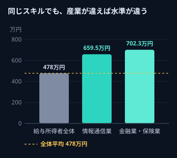
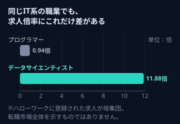

その言語経験、どこで評価される？

本ページはプロモーションを含みます／相談は無料
// experience != evaluation
同じJava、同じPythonでも、どの業界で・どの工程で・どんなプロダクトのために書くかによって、身につく経験も、提示される条件も変わります。
「自分のスキルが低いのかもしれない」と考える前に、その経験が“別の現場ではどう評価されるのか”を確かめてみませんか。
言語経験の活かし方を無料で相談する→相談は無料。転職するかどうかは、聞いてから決めて大丈夫です。
本ページはプロモーションを含みます／相談は無料
/* このページで分かること */
経験年数は増えているのに、書けるコードの幅が広がった実感がない
詳細設計書どおりに実装して、テストのエビデンスを取る時間が長い
フレームワークもバージョンも、自分が入る前から決まっていた
「Pythonができる人」として便利に頼まれるが、事業の中心は触っていない
同じ言語を使っている同世代と、年収の話をして少し焦った
転職したいのか、今の現場が合わないだけなのか、自分でも切り分けられない
ひとつでも当てはまるなら、それはスキル不足のサインではなく、経験の“置き場所”のサインかもしれません。
経済産業省が2018年に公表した「DXレポート」は、日本企業のITの課題として「2025年の崖」を提起しました。その中身は要するに、既存システムを維持し続けることに、資金と人材が大きく割かれているという指摘です。
そして、この状況は今も続いています。
野村総合研究所が2025年9月に実施した「IT活用実態調査（2025年）」では、情報システムにレガシーシステムが存在すると回答した企業は、アプリケーションで47.3%、基盤で48.2%。つまり、約半数の企業に、まだ古いシステムが残っているということです。
さらにIPA「DX動向2025」では、DXを推進する人材の“量”が不足していると回答した日本企業は85.1%。米国の23.8%、ドイツの44.6%と比べても高い水準でした。
この3つが同時に起きているのが、いまの日本のIT現場です。
あなたが保守と改修に時間を使っているのは、能力が低いからではなく、そういう配分になっている場所に、いま立っているからという可能性があります。
厚生労働省の職業情報提供サイト「job tag」には、ITスキル標準（ITSS）のレベル別に、年収レンジが掲載されています。
同じ「レベル3」でも、職務領域によってこう違います。

ITSS レベル3 ／ 年収レンジ
厚生労働省 job tag。厚生労働省が2023年度に実施した委託調査結果に基づく数値。
注目してほしいのは、これが「スキルレベルが違う人」の比較ではないということです。同じレベル3として整理されている人たちの間でも、どの領域の仕事をしているかによって、示されている年収の範囲が変わっています。
レベル5以上まで見ると、この差はさらに広がります。
ITSS レベル5以上 ／ 年収レンジ
厚生労働省 job tag。同上。
もちろん、これは「データ分析の仕事に移れば年収が上がる」という意味ではありません。そんな単純な話ではありませんし、必ずそうなる保証もありません。
ただ、自分がいまどの土俵にいるのかを知らないまま、「自分のスキルが低いのだろう」と結論づけてしまうのは、もったいない——そう言えるだけの材料は、公開データの中にあります。
実務経験2年以上のITエンジニアが対象です。
「Javaだから年収が上がらない」「Pythonなら上がる」——そういう話ではない、というデータもあります。
paizaが公表した「プログラミング言語に関する調査（2025年版）」では、同社の求人9,280件をもとに、2つのランキングが示されています。

企業ニーズ（求人に占める割合）
平均提示年収
paiza株式会社「プログラミング言語に関する調査（2025年版）」。同社求人9,280件をもとに集計。
Javaは、求人数の割合で見れば上位に入る言語です。つまり「選べる椅子の数」で言えば、Javaエンジニアはかなり恵まれた立場にいます。
一方で、提示年収の上位に並んでいるのは別の言語でした。ここから読み取れるのは、「言語ごとに価値が決まっている」ということではなく、その言語が“いま、どんな事業領域で使われているか”が条件に効いているということです。
事実、業種によって給与の水準そのものが違います。
国税庁「令和6年分 民間給与実態統計調査」によると、1年を通じて勤務した給与所得者の平均給与は478万円。これに対して——

業種別 平均給与
国税庁「令和6年分 民間給与実態統計調査」。1年を通じて勤務した給与所得者の平均給与。
同じスキルでも、どの産業の中で働くかによって、そもそもの水準が違う。
ここまでの話を、もう少し具体的にします。
Java の場合
どちらも価値のある仕事です。
ただし、転職市場で「次に何ができる人か」を判断するときに参照されやすいのはBの経験です。そしてAにいる人の多くが、実はB寄りの経験も部分的に持っています（後述）。
Python の場合
同じ「Python 3年」でも、AとBでは職務経歴書に書ける内容がまったく変わります。
そして重要なのはここです。AにいるからBに行けない、という決まりはありません。Aで培った「業務理解」「泥臭いデータの扱い」「現場の要件を聞き取る力」は、Bの現場でも評価対象になります。
需要は、IT業界の中で均等に分布していません。
経済産業省の委託調査「IT人材需給に関する調査」（2019年3月公表）では、IT需要の伸びが高位で推移した場合、2030年に先端IT人材は約54.5万人不足する一方、従来型IT人材は約9.7万人が余るという試算が示されています。IT人材全体では、2030年に最大で約79万人が不足するとされました。
厚生労働省の「job tag」に掲載されている有効求人倍率（令和6年度）を見ても、同じIT系の職業の中で数字が大きく違います。

有効求人倍率（令和6年度）
ハローワークに登録された求人が母集団のため、転職市場全体を示すものではありません。それでも、同じIT職の中に需給の温度差があることは読み取れます。
さらに、企業側の動きも変わってきています。野村総合研究所「IT活用実態調査（2025年）」では、生成AIを導入済みの企業は57.7%、検討中を含めると約76%。新しい技術を実際に扱える人を必要とする企業は、確実に増えています。
つまり——
在職中のままで大丈夫です。
求人票には、たいてい同じようなことが書かれています。
ここから読み取れないことのほうが、実は多いのです。
// 求人票に書かれていないこと
同じ求人票でも、この中身によって、3年後に自分が何を語れる人になるかが変わります。
そしてこれは、求人票を何百件読んでも書いていません。その会社を見てきた人からしか、出てこない情報です。
転職に慣れていないエンジニアの職務経歴書は、こうなりがちです。
書いてあることは事実です。でもこれでは、あなたにしかない部分がひとつも書かれていません。
同じ業務でも、掘ればこういう経験が出てくることがあります。
// 掘り起こせる経験の例
同じ経験が、書き方ひとつで別物になる。ここで差がつきます。
「今の経験では通用しない気がする」と感じたとき、多くの人はまず勉強を始めようとします。
もちろん学習は無駄になりません。ただ、実務経験が2年以上あるエンジニアの場合、先に手をつけたほうが効果が出やすいのは、たいてい棚卸しのほうです。
なぜなら——
具体的にやることは、この4つです。
// STEP 01 → 04
これを一人でやるのが難しいのは、自分の仕事を「当たり前」だと思っている人ほど、棚卸しができないからです。
だからこそ、経験者向けのエージェントという選択肢があります。
TechGOは、実務経験2年以上のITエンジニアを対象とした転職エージェントです。求人を紹介するだけでなく、「評価される状態にする」ところまで支援している点が特徴です。
エンジニアの経験は、業界の文脈を知らない人には翻訳が難しい領域です。TechGOでは、IT業界に理解のあるアドバイザーが、経験の棚卸し・職務経歴書の作成・面接対策まで支援します。「保守がメインで書けることがない」と思っている人ほど、話しながら整理する価値があります。
技術は書けるのに、面接で説明するのが苦手——というエンジニアは少なくありません。TechGOの模擬面接には回数制限がありません。納得できるまで、伝え方を作り込めます。
TechGOを運営するMyVision, Inc.は、ITコンサル・ハイクラス転職の領域に強みを持つ会社です。言語経験を、より上流の役割やプロダクト側のポジションにつなげたい場合、この背景は選択肢の幅として効いてきます。
在職中のエンジニアにとって、平日に選考時間を取るのは簡単ではありません。TechGOには土曜の1Day選考会があり、働きながらでも進めやすい設計になっています。
20代後半〜30代の支援実績が豊富な点も、「実務2〜8年、これからのキャリアを決めたい」という層と相性があります。
入力は4項目・約30秒。
入力するのは、これだけです。
入力は4項目・約30秒。相談は無料です。
※実際の入力はリンク先の申込フォームで行います。
いまの現場での評価だけを基準に、自分の言語経験の価値を決めてしまうのは、もったいないかもしれません。
同じJava、同じPython。でも、それをどこで書くかによって、次の3年で身につくものは変わります。
まずは、あなたの経験が「別の現場ではどう評価されるのか」を、確かめるところから始めてみませんか。
言語経験の活かし方を無料で相談する→相談は無料・入力4項目。在職中のままで大丈夫です。
本ページはプロモーションを含みます